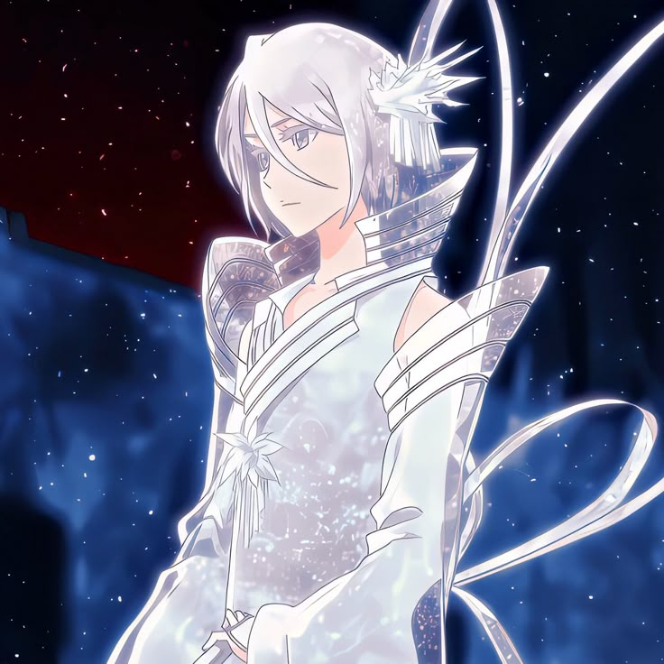

Sode no Shirayuki is the Zanpakutō of Rukia Kuchiki, one of the main characters in Bleach. It is often described as the most beautiful ice-type Zanpakutō, possessing a pure white blade, white hilt, and a long white ribbon attached to its pommel. This design symbolizes purity, elegance, and the cold serenity of snow.
Shikai Form (Initial Release)
Release Command: "Dance" (舞え, mae)
When activated, the blade becomes completely white and a long flowing ribbon extends from the hilt.
Abilities: Rukia’s Shikai grants her control over ice and snow, performed through elegant “dances.” Each dance is essentially a named technique:
Some no mai, Tsukishiro (First Dance, White Moon): Creates a pillar of ice that freezes everything within its circle from the ground to the sky.
Tsugi no mai, Hakuren (Next Dance, White Ripple): Fires a massive wave of ice from the blade that can freeze opponents instantly.
San no mai, Shirafune (Third Dance, White Sword): Extends the blade with ice, piercing through enemies even if the original strike misses.
These attacks are graceful but deadly, reflecting both precision and elegance.
Bankai Form (Final Release):
Name: Hakka no Togame (白霞罸 – "White Mist Punishment")
Appearance: Rukia herself becomes clad in pure white ice, her hair turning pale, and she resembles a living snow queen.
Power: Instead of simply manipulating ice, she lowers her own body temperature to absolute zero (−273°C). Anything that comes near her freezes instantly.
This ability is insanely dangerous — even for Rukia herself — because it puts her body on the edge of shattering. That’s why she has to use it with precise timing.

Symbolism & Aesthetic
White = Purity + Death: In Japanese culture, white can symbolize both purity and mourning. Sode no Shirayuki’s appearance represents Rukia’s calm, noble personality but also her deadly strength.
Dance Motif: All her techniques are referred to as dances, which emphasize grace, control, and artistry — unlike raw destructive Zanpakutō like Zangetsu.
Contrast with Rukia: At first Rukia is seen as small and fragile, but Sode no Shirayuki reveals her hidden elegance and lethality.
Importance in the Story
During the Soul Society Arc, Rukia’s Zanpakutō was sealed, so we don’t see its true form until later. When revealed, it shocked fans because of how unique and visually stunning it was.
In the Thousand-Year Blood War Arc, Rukia finally masters her Bankai, proving her growth from a “supporting character” into one of the strongest fighters in Soul Society.